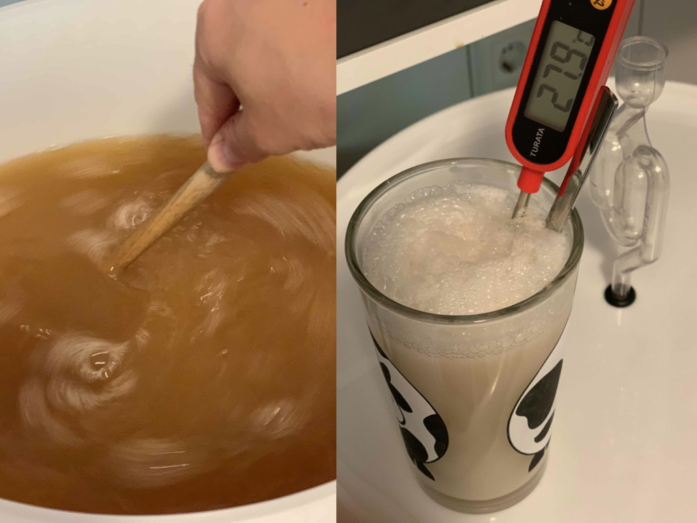
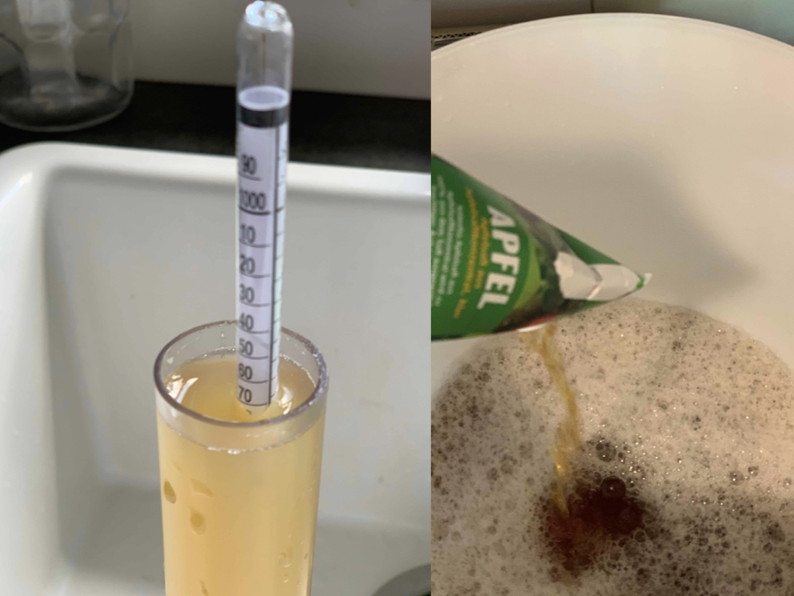
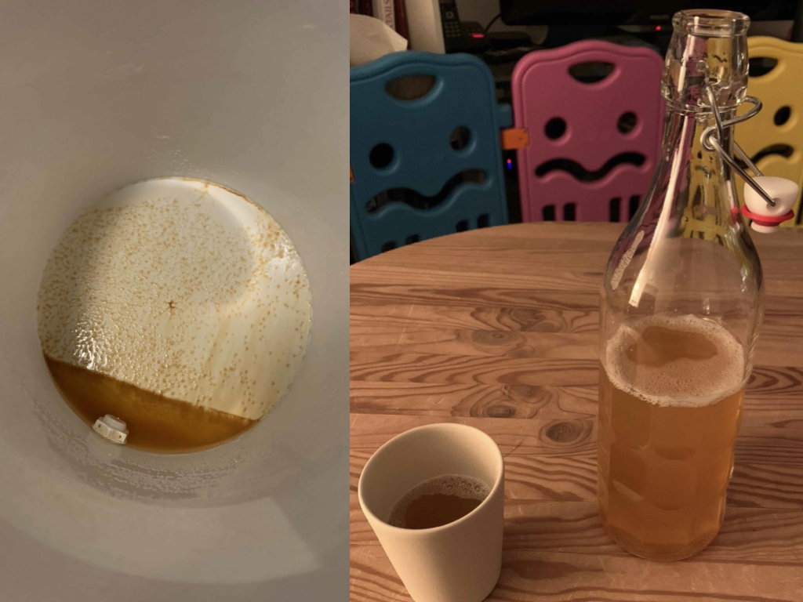
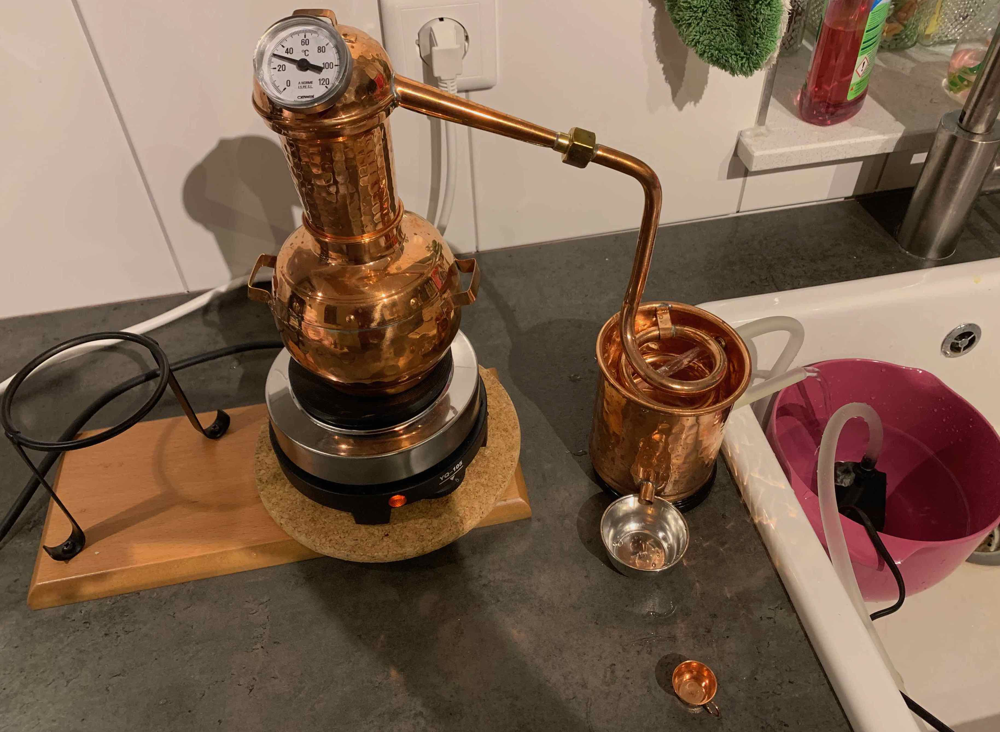

If there are any benefits of a world wirde pandemic and the resulting in-ward focus of attention and time, it may be the grows on home-made produce. Baking bread has become the quintessential past time for many in the early months, and I make no exception to this stereotype. I may write about this in another post. Here, I will show my attempt at brewing cider at home.
It's hardy more complicated than brewing beer, perhaps even simpler. In it's simplest form, all you need is freshly presed apple juice. The natural spores of yeasts on the outside of most apples will inoculate the apple juice when extracting the juice. Alternatively, bottled apple juice from the supermarket may be used. In this case, you have to add yeast cultures for brewing (rather not use yeast that's intended for baking bread). There are various specialised cultures available online at specialised brewing shops or even amazon. These cultures are bred to yield in better tasting results and are more resilient towards alcohol. I opted for a yeast culture that tolerates up to 15% ethanol. For this to work out, only few apple juices contain enough sugar (which is converted into the desired ethanol). If the yeast runs out of sugar half way through, the end result tastes very acidic and may contain less ethanol than desried. Having learnt this at my first brewing experiment, I made sure to add a generous amount of sugar to the batch the second time around.

All in all, I can recomment 20 liters of apple juice, one pack of yeast and 2 kg of sugar. The apple juice goes into a big bucket. I recommend buying one of those together with the yeast. They should also come with an outlet and an air-lock. Make sure to keep all equipment sanitised by rinsing with boiling water. Nothing is more disappointing than realising the hole batch has gone bad due to bakteria a week into the process. Dry yeast should be woken up in warm sugary water for a couple of hours, then add the mixture to the apple juice and stir. Lastly, close the lid with the air-lock in place. This keeps bacteria and air outside of the bucket while allowing the carbon dioxide to escape. And that's pretty much it. Keep it at a dry place at around 20 degrees celsius.

It is possible to predict the amount of alcohol that can be produced under ideal circumstances. For this, you measure the density of the solution. If the apple juice is clear and contains only little suspended material, the density of the liquid relates to the amount of sugar in it. Provided all of that sugar will be processed into ethanol and carbon dioxide, the volume percentage of alcohol in the end product follows directly. However, in my case the juice had not been entirely clear and the amount of sugar I had added was sufficient to gain more alcohol than the yeast tolerated. Eventually, I guestimated the amount of alcohol in the final product to be around 12%. This coincided with the expected highest concentration according to the type of yeast in my batch.

Within two to three days, the mixture begins to ferment, indicated by an increasing bubbling in the air-lock. This activity intensifies and goes on for at least a week, until it calms down for a few days and comes to a stop. The entire fermentation takes around two to three weeks, depending on personal preference. I took samples after one week and two weeks to decide when it was the right moment to terminate fermentation. Sulphite is then added to kill the yeast, thereby stopping the process. The sulphite, along with the ethanol, also serves to kill any contamination with bacteria that may happen after or during bottling. Let the batch sit for at least another four days to allow for the dead yeast to sink to the bottom of the container.

I ordered two dozens bottles off the internet, sanitised them again with almost boiling hot water and carefully rinsed the fresh cider through the opening in the bucket. The better the yeast has sedimented, the clearer the cider looks in the bottles - and the better it tastes. I additionally passed the cider through a very fine filter made for this purpose in order to retain as clear a cider as possible. The importance of this step to the taste of the final product should not be underestimated. Nonetheless, there happened to appear small deposits at the bottom of most bottles after a month or two. Despite the precautions, some bottles had surviving yeast in them and opened with an impressive and frankly surprising vigor. This lead me to store the bottles in a solid box and occasionally open them gently to allow pressure to escape. All in all, after two months I had produced 19 bottles of super yummy cider.

As a point of inspiration, I leave a picture of a still. Depending on the jurisdiction in your country, this could be a step to further enrich your beverage. Living in Germany, I of course used the set up for extracting essential oils from herbs only!